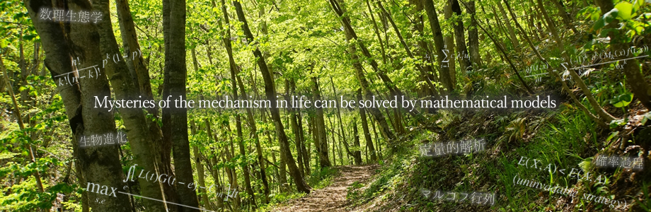

- 09/24/2019SocietyWebpage of the 2nd "power demography" meeting is now online.
- 09/23/2019SocietyPoster of the 2nd symmposium of "Power demography" is now available
- 04/30/2019SocietyWebpage of the 2nd workshop of "Demographic theories" is now online. Application acceptance began.
- 09/27/2018SocietyWebpage of the 1st annual meeting of "Power demography" is now online
- 08/30/2018SocietyPoster of the 1st annual meeting of "Power demography" is now available on the website
- 08/06/2018OthersThe code of obtaining the annual transition matrix is now available.